Crédits photos
Ces photos viennent de Wikimedia Commons, sous licence libre. Merci à leurs auteurs.
 Photo : Bibimbap 7, Chloe Lim, CC BY 2.0
Photo : Bibimbap 7, Chloe Lim, CC BY 2.0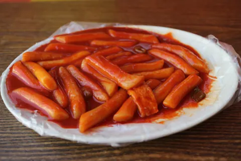
Photo : Tteok-bokki 3, 709 K, CC0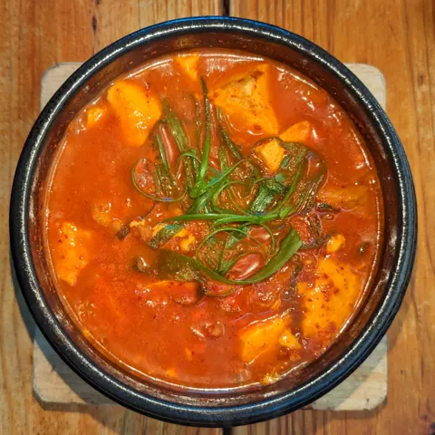
Photo : Kimchi jjigae - San Francisco, CA, Daderot, CC0 Photo : Korean.cuisine-Bulgogi-01, by ayustety, CC BY-SA 2.0
Photo : Korean.cuisine-Bulgogi-01, by ayustety, CC BY-SA 2.0 Photo : Korean.cuisine-Samgyeopsal-01, by hellochris, CC BY 2.0
Photo : Korean.cuisine-Samgyeopsal-01, by hellochris, CC BY 2.0 Photo : Yangnyeom chicken 2, Vee Satayamas, CC BY 2.0
Photo : Yangnyeom chicken 2, Vee Satayamas, CC BY 2.0 Photo : Korean cuisine japchae 2, The original uploader was Appleby at English Wikipedia ., CC BY-SA 2.0
Photo : Korean cuisine japchae 2, The original uploader was Appleby at English Wikipedia ., CC BY-SA 2.0 Photo : Gimbap 8, Jordi Sanchez, CC BY-SA 2.0
Photo : Gimbap 8, Jordi Sanchez, CC BY-SA 2.0 Photo : Korean stew-Sundubu jjigae-05, by titanium22, CC BY-SA 2.0
Photo : Korean stew-Sundubu jjigae-05, by titanium22, CC BY-SA 2.0 Photo : Bibim-naengmyeon, chomjong, CC BY 2.0
Photo : Bibim-naengmyeon, chomjong, CC BY 2.0 Photo : Pajeon, Brücke-Osteuropa, CC0
Photo : Pajeon, Brücke-Osteuropa, CC0 Photo : Budae jjigae before boiling, w:ko:user:Dlunch, CC BY-SA 2.5
Photo : Budae jjigae before boiling, w:ko:user:Dlunch, CC BY-SA 2.5 Photo : Banchans, stuart spivack (a flickr user), CC BY-SA 2.0
Photo : Banchans, stuart spivack (a flickr user), CC BY-SA 2.0 Photo : Cooking Dak-galbi in Seoul Korea, Sgroey, CC BY-SA 4.0
Photo : Cooking Dak-galbi in Seoul Korea, Sgroey, CC BY-SA 4.0 Photo : Doenjang-jjigae 4, 이동원, CC0
Photo : Doenjang-jjigae 4, 이동원, CC0 Photo : Gyeran-mari 1, Jens Ohlig, CC BY-SA 2.0
Photo : Gyeran-mari 1, Jens Ohlig, CC BY-SA 2.0 Photo : Hotteok 2, Sandra Vallaure, CC BY 2.0
Photo : Hotteok 2, Sandra Vallaure, CC BY 2.0 Photo : Spicy pork bulgogi, P1898, CC BY 4.0
Photo : Spicy pork bulgogi, P1898, CC BY 4.0 Photo : Kimchi fried rice, Sharon Ang, CC0
Photo : Kimchi fried rice, Sharon Ang, CC0 Photo : Baechu-gimchi, gwangju kimchi, CC BY-SA 2.0
Photo : Baechu-gimchi, gwangju kimchi, CC BY-SA 2.0 Photo : Oi Muchim 오이무침1, Valenzuela400, CC BY-SA 4.0
Photo : Oi Muchim 오이무침1, Valenzuela400, CC BY-SA 4.0 Photo : Sigeumchi-namul 2, Hyeon-Jeong Suk, CC BY 2.0
Photo : Sigeumchi-namul 2, Hyeon-Jeong Suk, CC BY 2.0 Photo : Tteokguk made in 2018, 아라, CC BY-SA 4.0
Photo : Tteokguk made in 2018, 아라, CC BY-SA 4.0 Photo : Heukmibap (black rice), Hyeon-Jeong Suk, CC BY 2.0
Photo : Heukmibap (black rice), Hyeon-Jeong Suk, CC BY 2.0 Photo : Baechu kimchi, 최광모, CC BY-SA 4.0
Photo : Baechu kimchi, 최광모, CC BY-SA 4.0 Photo : Andong Jjimdak, Choi2451, CC BY-SA 4.0
Photo : Andong Jjimdak, Choi2451, CC BY-SA 4.0 Photo : Bibim-guksu, JeongHO Suh (daecheonnet), CC0
Photo : Bibim-guksu, JeongHO Suh (daecheonnet), CC0 Photo : Korean.food-Bossam-02, by ayustety (a flickr user), CC BY-SA 2.0
Photo : Korean.food-Bossam-02, by ayustety (a flickr user), CC BY-SA 2.0 Photo : Korean.food-Dakbokemtang-01, stuart_spivack (a flickr user), CC BY-SA 2.0
Photo : Korean.food-Dakbokemtang-01, stuart_spivack (a flickr user), CC BY-SA 2.0 Photo : Eomuk-bokkeum, Eunyoung Lee, CC0
Photo : Eomuk-bokkeum, Eunyoung Lee, CC0 Photo : Galbi-jjim 3, lazy fri13th, CC BY 2.0
Photo : Galbi-jjim 3, lazy fri13th, CC BY 2.0 Photo : Gyeran-jjim, stu_spivack, CC BY-SA 2.0
Photo : Gyeran-jjim, stu_spivack, CC BY-SA 2.0 Photo : Kongnamul-haejang-guk, 최규민, CC0
Photo : Kongnamul-haejang-guk, 최규민, CC0 Photo : Miyeok Guk, Jaydub666, CC BY 4.0
Photo : Miyeok Guk, Jaydub666, CC BY 4.0 Photo : Mu-saengchae, chomjong, CC BY 2.0
Photo : Mu-saengchae, chomjong, CC BY 2.0 Photo : Pa-gimchi (cropped), gwangju kimchi, CC BY-SA 2.0
Photo : Pa-gimchi (cropped), gwangju kimchi, CC BY-SA 2.0 Photo : Soegogimuguk (beef radish soup), 국립국어원, CC BY-SA 2.0
Photo : Soegogimuguk (beef radish soup), 국립국어원, CC BY-SA 2.0 Photo : Ojingeo-bokkeum 1, lazy fri13th, CC BY 2.0
Photo : Ojingeo-bokkeum 1, lazy fri13th, CC BY 2.0- Photo : Kkakdugi 1, gildedgingerbread., CC BY 4.0
 Photo : Korean cuisine-Dubu jorim-01, angela n. at Flickr, CC BY-SA 2.0
Photo : Korean cuisine-Dubu jorim-01, angela n. at Flickr, CC BY-SA 2.0 Photo : Kongnamul-muchim 1, Charles Haynes, CC BY-SA 2.0
Photo : Kongnamul-muchim 1, Charles Haynes, CC BY-SA 2.0 Photo : Doenjang Guk (25163114145), T.Tseng, CC BY 2.0
Photo : Doenjang Guk (25163114145), T.Tseng, CC BY 2.0 Photo : Dak-gangjeong 3, hyun chun kim, CC0
Photo : Dak-gangjeong 3, hyun chun kim, CC0 Photo : Korea fish cake soup-Eomuk-Tang 어묵탕- (6768498759), Chloe Lim from Seoul, South Korea, CC BY 2.0
Photo : Korea fish cake soup-Eomuk-Tang 어묵탕- (6768498759), Chloe Lim from Seoul, South Korea, CC BY 2.0 Photo : Galbitang 갈비탕 beeniru, Beeniru, CC BY-SA 3.0
Photo : Galbitang 갈비탕 beeniru, Beeniru, CC BY-SA 3.0 Photo : Gamja jorim 감자조림1, Valenzuela400, CC BY-SA 4.0
Photo : Gamja jorim 감자조림1, Valenzuela400, CC BY-SA 4.0 Photo : Gamja-jeon 2, Chloe Lim, CC BY 2.0
Photo : Gamja-jeon 2, Chloe Lim, CC BY 2.0 Photo : Korean.cuisine-Godeungeo.jorim-01, by LWY at flickr, CC BY 2.0
Photo : Korean.cuisine-Godeungeo.jorim-01, by LWY at flickr, CC BY 2.0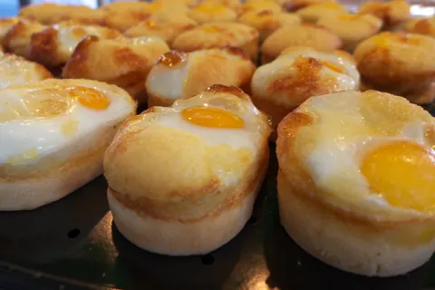
Photo : Gyeranppang by travel oriented, travel oriented from Seoul, South Korea, CC BY-SA 2.0 Photo : Hobak-jeon, hyun chun kim, CC0
Photo : Hobak-jeon, hyun chun kim, CC0 Photo : Janchi-guksu 2, Chloe Lim, CC BY 2.0
Photo : Janchi-guksu 2, Chloe Lim, CC BY 2.0 Photo : Jajangmyeon by KFoodaddict, KFoodaddict, CC BY 2.0
Photo : Jajangmyeon by KFoodaddict, KFoodaddict, CC BY 2.0 Photo : Korean.noodle-Kalguksu-01, by jslander, CC BY 2.0
Photo : Korean.noodle-Kalguksu-01, by jslander, CC BY 2.0 Photo : Kimchijeon at Okja Restaurant, Milan, 2022, Chiyako92, CC BY-SA 4.0
Photo : Kimchijeon at Okja Restaurant, Milan, 2022, Chiyako92, CC BY-SA 4.0 Photo : Kong-guksu 1, chomjong, CC BY 2.0
Photo : Kong-guksu 1, chomjong, CC BY 2.0 Photo : 20210212 LA갈비, Kth696586, CC BY-SA 3.0
Photo : 20210212 LA갈비, Kth696586, CC BY-SA 3.0 Photo : Pan dumplings, SarKaLay စာကလေး, CC BY-SA 4.0
Photo : Pan dumplings, SarKaLay စာကလေး, CC BY-SA 4.0 Photo : Kkwari-gochu-myeolchi-bokkeum, 차차PD, CC BY 4.0
Photo : Kkwari-gochu-myeolchi-bokkeum, 차차PD, CC BY 4.0 Photo : Rabokki - SOJU 2024-06-02, Andy Li, CC0
Photo : Rabokki - SOJU 2024-06-02, Andy Li, CC0 Photo : Samgye-tang 2, wizdata, CC0
Photo : Samgye-tang 2, wizdata, CC0 Photo : Yukgaejang-Moscow, Lord Mountbatten, public domain
Photo : Yukgaejang-Moscow, Lord Mountbatten, public domain Photo : Dalgona 1, PhareannaH[berhabuk], CC BY 2.0
Photo : Dalgona 1, PhareannaH[berhabuk], CC BY 2.0 Photo : Hojicha bingsu ice dessert at cafe in Melbourne, Philip Mallis, CC BY-SA 2.0
Photo : Hojicha bingsu ice dessert at cafe in Melbourne, Philip Mallis, CC BY-SA 2.0 Photo : Korean.food-Gamjatang-01, comicpie (a flickr user), CC BY 2.0
Photo : Korean.food-Gamjatang-01, comicpie (a flickr user), CC BY 2.0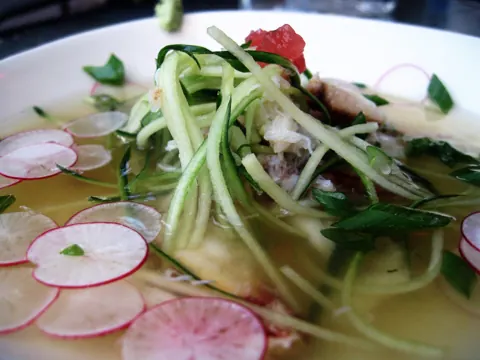
Photo : Korean cold cucumber soup-Oi naengguk-01, SauceSupreme, CC BY 2.0 Photo : Korean.food-Tteok.mandu.guk-01, stuart_spivack (a flickr user), CC BY-SA 2.0
Photo : Korean.food-Tteok.mandu.guk-01, stuart_spivack (a flickr user), CC BY-SA 2.0 Photo : Hobak-juk 2, Hyeon-Jeong Suk, CC BY 2.0
Photo : Hobak-juk 2, Hyeon-Jeong Suk, CC BY 2.0 Photo : Jumeok-bap, Chloe Lim, CC BY 2.0
Photo : Jumeok-bap, Chloe Lim, CC BY 2.0 Photo : Samseon jjamppong, Kjoonlee, CC BY 4.0
Photo : Samseon jjamppong, Kjoonlee, CC BY 4.0 Photo : Mul-naengmyeon 1, chomjong, CC BY 2.0
Photo : Mul-naengmyeon 1, chomjong, CC BY 2.0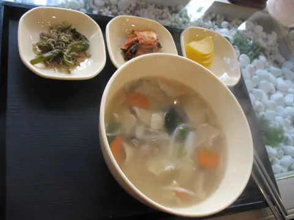
Photo : Korean.cuisine-Sujebi-01, Steve Longus, CC BY 2.0 Photo : Dwaeji-galbi-gui, lazy fri13th, CC BY 2.0
Photo : Dwaeji-galbi-gui, lazy fri13th, CC BY 2.0 Photo : Tteok-galbi, https://pixabay.com/users/ArgentumFerrum-990817/ ArgentumFerrum], CC0
Photo : Tteok-galbi, https://pixabay.com/users/ArgentumFerrum-990817/ ArgentumFerrum], CC0 Photo : Jangjorim, Hyeon-Jeong Suk, CC BY 2.0
Photo : Jangjorim, Hyeon-Jeong Suk, CC BY 2.0 Photo : Dak-kkochi 3, Charles Haynes, CC BY-SA 2.0
Photo : Dak-kkochi 3, Charles Haynes, CC BY-SA 2.0 Photo : Gilgeori toast 3, gildedgingerbread, CC BY 4.0
Photo : Gilgeori toast 3, gildedgingerbread, CC BY 4.0 Photo : Corn dog 001, Ocdp, CC0
Photo : Corn dog 001, Ocdp, CC0 Photo : Triple White Kimchi 04, korea.net, CC BY-SA 2.0
Photo : Triple White Kimchi 04, korea.net, CC BY-SA 2.0 Photo : Oi-sobagi, Chloe Lim, CC BY 2.0
Photo : Oi-sobagi, Chloe Lim, CC BY 2.0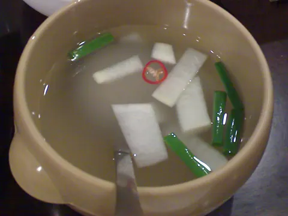
Photo : Korean-Dongchimi-01, by karendotcom127, CC BY 2.0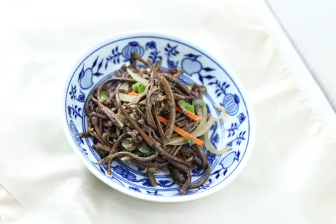
Photo : Gosari, Hyeon-Jeong Suk, CC BY 2.0 Photo : Buchujeon(garlic chive pancake), akdrhWkd, CC0
Photo : Buchujeon(garlic chive pancake), akdrhWkd, CC0 Photo : Korean rice punch-Sikhye-01A, by gliuoo, CC BY-SA 2.0
Photo : Korean rice punch-Sikhye-01A, by gliuoo, CC BY-SA 2.0 Photo : Seolleongtang, 이동원, CC0
Photo : Seolleongtang, 이동원, CC0 Photo : Cheonggukjang-jjigae, 차차PD, CC BY 4.0
Photo : Cheonggukjang-jjigae, 차차PD, CC BY 4.0 Photo : Korea-Gyeongju-Gampo Port-Maeuntang-01, by Junho Jung at Flickr from South Korea, CC BY 3.0
Photo : Korea-Gyeongju-Gampo Port-Maeuntang-01, by Junho Jung at Flickr from South Korea, CC BY 3.0 Photo : Haemultang, Brücke-Osteuropa, CC0
Photo : Haemultang, Brücke-Osteuropa, CC0 Photo : Beoseot-jeongol, ~Mers, CC BY-SA 2.0
Photo : Beoseot-jeongol, ~Mers, CC BY-SA 2.0 Photo : Jeonbok-juk, bryan..., CC BY-SA 2.0
Photo : Jeonbok-juk, bryan..., CC BY-SA 2.0 Photo : Patjuk, wizdata, CC0
Photo : Patjuk, wizdata, CC0 Photo : Omurice by Taimeiken, Kanesue, CC BY 2.0
Photo : Omurice by Taimeiken, Kanesue, CC BY 2.0- Photo : Geon-saeu-bokkeum-bap, 집밥쿡, CC BY 4.0
 Photo : Korea-Gangneung-Makguksu-Cold buckwheat noodle dish-01, by Junho Jung at Flickr from South Korea, CC BY-SA 3.0
Photo : Korea-Gangneung-Makguksu-Cold buckwheat noodle dish-01, by Junho Jung at Flickr from South Korea, CC BY-SA 3.0 Photo : Godeungeo-gui, Daniel Moskowitz, CC0
Photo : Godeungeo-gui, Daniel Moskowitz, CC0 Photo : Galchi-jorim, 세미짱, CC BY 4.0
Photo : Galchi-jorim, 세미짱, CC BY 4.0 Photo : Korean cuisine-Yeongeun jorim-01, by Richy! at flickr, CC BY-SA 2.0
Photo : Korean cuisine-Yeongeun jorim-01, by Richy! at flickr, CC BY-SA 2.0 Photo : Kongjaban (savoury soybean), Hyeon-Jeong Suk, CC BY 2.0
Photo : Kongjaban (savoury soybean), Hyeon-Jeong Suk, CC BY 2.0 Photo : Korean.cuisine-Doraji oi muchim-01, by jetalone (flickr), CC BY 2.0
Photo : Korean.cuisine-Doraji oi muchim-01, by jetalone (flickr), CC BY 2.0 Photo : Dotorimuk Muchim, 최광모, CC BY-SA 4.0
Photo : Dotorimuk Muchim, 최광모, CC BY-SA 4.0 Photo : Yeolmu Kimchi, 15jamesj, CC BY-SA 3.0
Photo : Yeolmu Kimchi, 15jamesj, CC BY-SA 3.0 Photo : Korean pancake-Bindaetteok-04, by Tales of an LA Addict (Abby) at Flickr, CC BY-SA 2.0
Photo : Korean pancake-Bindaetteok-04, by Tales of an LA Addict (Abby) at Flickr, CC BY-SA 2.0 Photo : Songpyeon, wizdata, CC0
Photo : Songpyeon, wizdata, CC0 Photo : Donggeurang-ttaeng, Chloe Lim, CC BY 2.0
Photo : Donggeurang-ttaeng, Chloe Lim, CC BY 2.0 Photo : Korean.pancake-Saengseon jeon-01, by 南宮博士, CC BY-SA 2.0
Photo : Korean.pancake-Saengseon jeon-01, by 南宮博士, CC BY-SA 2.0 Photo : Kkaennipjeon (perilla), Hyeon-Jeong Suk, CC BY 2.0
Photo : Kkaennipjeon (perilla), Hyeon-Jeong Suk, CC BY 2.0 Photo : Gimmari 김말이C1, Valenzuela400, CC BY-SA 4.0
Photo : Gimmari 김말이C1, Valenzuela400, CC BY-SA 4.0 Photo : Tteok-kkochi, Chloe Lim, CC BY 2.0
Photo : Tteok-kkochi, Chloe Lim, CC BY 2.0 Photo : Sotteok-sotteok, Ajumeoni, CC0
Photo : Sotteok-sotteok, Ajumeoni, CC0 Photo : Kkaennip-jangajji 2, 굿바이 조미료, CC BY 2.0
Photo : Kkaennip-jangajji 2, 굿바이 조미료, CC BY 2.0 Photo : Pa-muchim, lazy fri13th, CC BY 2.0
Photo : Pa-muchim, lazy fri13th, CC BY 2.0 Photo : Gimchi-jjim, I. H Cho, CC0
Photo : Gimchi-jjim, I. H Cho, CC0 Photo : Korean cuisine-Dubu kimchi-01, by benghan, CC BY-SA 2.0
Photo : Korean cuisine-Dubu kimchi-01, by benghan, CC BY-SA 2.0 Photo : Chungmu gimbab, Tmannya, CC BY-SA 3.0
Photo : Chungmu gimbab, Tmannya, CC BY-SA 3.0 Photo : Mayak-gimbap (31896881761), bryan... from Taipei, Taiwan, CC BY-SA 2.0
Photo : Mayak-gimbap (31896881761), bryan... from Taipei, Taiwan, CC BY-SA 2.0 Photo : Korean curry rice, 국립국어원, CC BY-SA 2.0
Photo : Korean curry rice, 국립국어원, CC BY-SA 2.0 Photo : Injeolmi, ally j, CC0
Photo : Injeolmi, ally j, CC0 Photo : KOCIS yakgwa, honey cookies (4646996556), Korea.net / Korean Culture and Information Service, CC BY-SA 2.0
Photo : KOCIS yakgwa, honey cookies (4646996556), Korea.net / Korean Culture and Information Service, CC BY-SA 2.0 Photo : Gyeongdan, Hyeon-Jeong Suk, CC BY 2.0
Photo : Gyeongdan, Hyeon-Jeong Suk, CC BY 2.0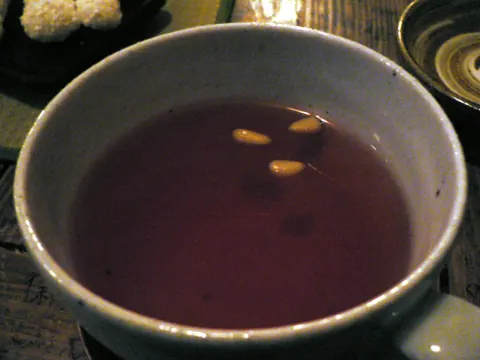
Photo : Korean.tea-Sujeonggwa-01, abex, CC BY-SA 2.0 Photo : Korean yuja tea, Drew Lietzow, public domain
Photo : Korean yuja tea, Drew Lietzow, public domain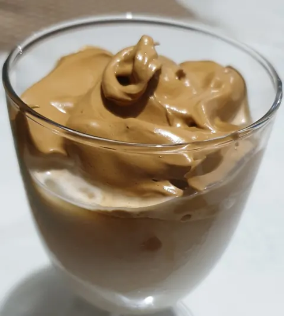
Photo : Dalgona coffee, Kguirnela, CC BY-SA 4.0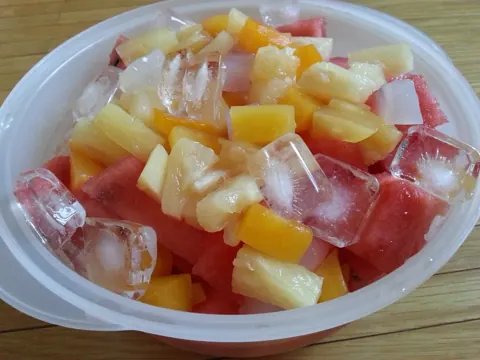
Photo : Subak hwachae, made with watermelon, Donghwan Seong, CC BY-SA 3.0 Photo : Yaksik, Hyeon-Jeong Suk, CC BY 2.0
Photo : Yaksik, Hyeon-Jeong Suk, CC BY 2.0- Photo : Rosé tteokbokki 2, 호기로운생활, CC BY-SA 2.5
 Photo : Korean Kimchi Mandu, Hankook12, CC0
Photo : Korean Kimchi Mandu, Hankook12, CC0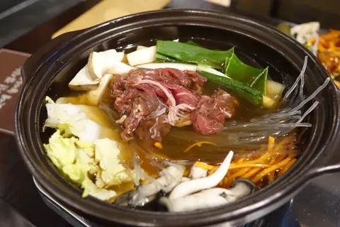
Photo : Bulgogi-jeongol 1, hyun chun kim, CC0 Photo : Korean soup-Bugeoguk-01, Pachinee Buathong, CC BY-SA 2.0
Photo : Korean soup-Bugeoguk-01, Pachinee Buathong, CC BY-SA 2.0 Photo : Korea-Sokcho-Sanchae jeongsik-Bibimbap-01, by Junho Jung at Flickr from South Korea, CC BY-SA 3.0
Photo : Korea-Sokcho-Sanchae jeongsik-Bibimbap-01, by Junho Jung at Flickr from South Korea, CC BY-SA 3.0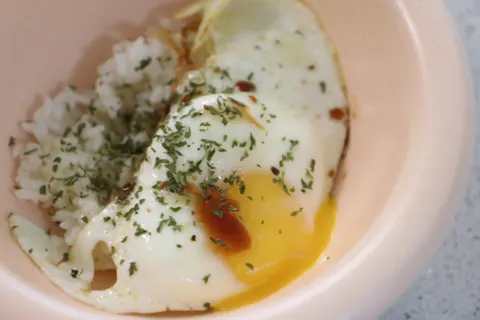
Photo : Ganjang-gyeran-bap 3, 건강한 레시피, CC BY 4.0 Photo : Chadolbagi 2, 국립국어원, CC BY-SA 2.0
Photo : Chadolbagi 2, 국립국어원, CC BY-SA 2.0 Photo : Korean pancake-Gochujeon-01, by 南宮博士, CC BY-SA 2.0
Photo : Korean pancake-Gochujeon-01, by 南宮博士, CC BY-SA 2.0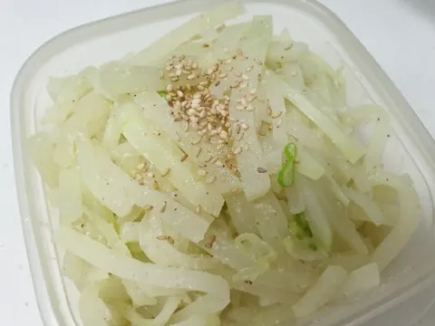
Photo : Mu-namul, 초롱, CC BY 2.0 Photo : Kimchi soup, Brücke-Osteuropa, CC0
Photo : Kimchi soup, Brücke-Osteuropa, CC0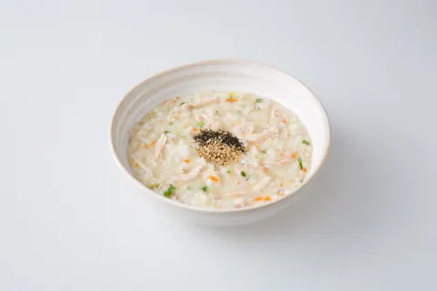
Photo : Dakjuk, 국립국어원, CC BY-SA 2.0 Photo : Ramyeon 1, stu_spivack, CC BY-SA 2.0
Photo : Ramyeon 1, stu_spivack, CC BY-SA 2.0- Photo : Korean barbeque-Buldak-01, by ~Nisa at Flickr, CC BY-SA 2.0
 Photo : Tuna kimchi-jjigae, Chloe Lim, CC BY 2.0
Photo : Tuna kimchi-jjigae, Chloe Lim, CC BY 2.0 Photo : Chapaguri 2, Debbie Tingzon, CC BY 2.0
Photo : Chapaguri 2, Debbie Tingzon, CC BY 2.0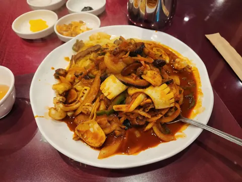
Photo : Yaki udon in Daegu, Arumdaum, CC0 Photo : Haemul-jjim, 최광모, CC0
Photo : Haemul-jjim, 최광모, CC0 Photo : Gim-bugak, 땡벌, CC BY 2.0
Photo : Gim-bugak, 땡벌, CC BY 2.0 Photo : Baechu-jeon, 맛짱, CC BY 2.0
Photo : Baechu-jeon, 맛짱, CC BY 2.0 Photo : Gamja-ongsimi 2, 느꽃지기, CC BY-SA 2.0
Photo : Gamja-ongsimi 2, 느꽃지기, CC BY-SA 2.0 Photo : Memil-jeonbyeong, 김다혜, CC BY 2.0
Photo : Memil-jeonbyeong, 김다혜, CC BY 2.0 Photo : Korean.food-Andong.Hansik-Heotjesabab, ebifry, CC BY 2.0
Photo : Korean.food-Andong.Hansik-Heotjesabab, ebifry, CC BY 2.0 Photo : Gaji-bokkeum, Hyeon-Jeong Suk, CC BY 2.0
Photo : Gaji-bokkeum, Hyeon-Jeong Suk, CC BY 2.0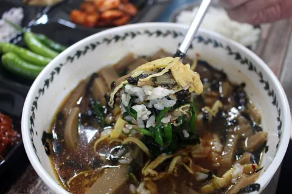
Photo : Mukbap 3, 대경라이프, CC BY-SA 4.0 Photo : Sigeumchi-doenjang-guk, 쑤기언니, CC BY 4.0
Photo : Sigeumchi-doenjang-guk, 쑤기언니, CC BY 4.0 Photo : Mu-jorim, 경빈마마, CC BY 4.0
Photo : Mu-jorim, 경빈마마, CC BY 4.0 Photo : Goguma-mattang, 행복한 초록개구리, CC BY 4.0
Photo : Goguma-mattang, 행복한 초록개구리, CC BY 4.0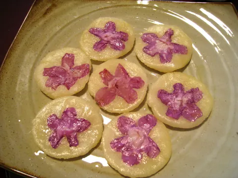
Photo : Korean pancake-Jindallae hwajeon-03, https://www.flickr.com/photos/greenful/, CC BY-SA 2.0 Photo : Maejap-gwa, 삼삶스토리, CC BY 4.0
Photo : Maejap-gwa, 삼삶스토리, CC BY 4.0 Photo : Misu, 국립국어원, CC BY-SA 2.0
Photo : Misu, 국립국어원, CC BY-SA 2.0 Photo : Dwaeji-gukbap, http://blog.daum.net/wjlee4284 사이팔사], CC BY 2.0
Photo : Dwaeji-gukbap, http://blog.daum.net/wjlee4284 사이팔사], CC BY 2.0 Photo : Milmyeon, Minseong Kim, CC BY-SA 4.0
Photo : Milmyeon, Minseong Kim, CC BY-SA 4.0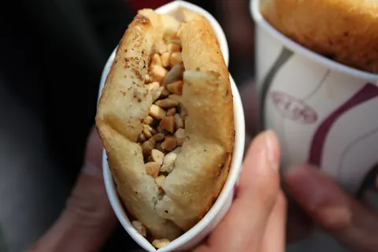
Photo : Ssiat hotteok, seul5167, CC0 Photo : Kongnamul gukbap 20230408 001, Mobius6, CC BY-SA 4.0
Photo : Kongnamul gukbap 20230408 001, Mobius6, CC BY-SA 4.0 Photo : Gogi-guksu 2024, Seefooddiet, CC BY-SA 4.0
Photo : Gogi-guksu 2024, Seefooddiet, CC BY-SA 4.0 Photo : 신설오름 몸국, 공석배, CC BY 4.0
Photo : 신설오름 몸국, 공석배, CC BY 4.0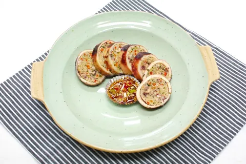
Photo : Ojingeo sundae (stuffed squid) 2, (Shinae Bang) 방신애, CC BY 4.0 Photo : Dak-han-mari 1, bryan..., CC BY-SA 2.0
Photo : Dak-han-mari 1, bryan..., CC BY-SA 2.0 Photo : Gul-gukbap, Dr 방원장, CC BY 4.0
Photo : Gul-gukbap, Dr 방원장, CC BY 4.0 Photo : Nakji-bokkeum, 박家상민, CC BY 4.0
Photo : Nakji-bokkeum, 박家상민, CC BY 4.0 Photo : Hwangnam bread, ProjectManhattan, CC0
Photo : Hwangnam bread, ProjectManhattan, CC0 Photo : Korean cuisine-Jeju Island-Bingtteok-01, by Tong-Seob Kim at Flickr from Incheon , South Korea, CC BY-SA 3.0
Photo : Korean cuisine-Jeju Island-Bingtteok-01, by Tong-Seob Kim at Flickr from Incheon , South Korea, CC BY-SA 3.0 Photo : Chodang Sundubu 04 (33422779322), Republic of Korea from Seoul, Republic of Korea, CC BY-SA 2.0
Photo : Chodang Sundubu 04 (33422779322), Republic of Korea from Seoul, Republic of Korea, CC BY-SA 2.0 Photo : Bibim Dangmyeon 20200523 003, Mobius6, CC BY-SA 4.0
Photo : Bibim Dangmyeon 20200523 003, Mobius6, CC BY-SA 4.0 Photo : Gat-gimchi 3, kimsco, CC0
Photo : Gat-gimchi 3, kimsco, CC0 Photo : Napjak-mandu, kijeong kwon, CC0
Photo : Napjak-mandu, kijeong kwon, CC0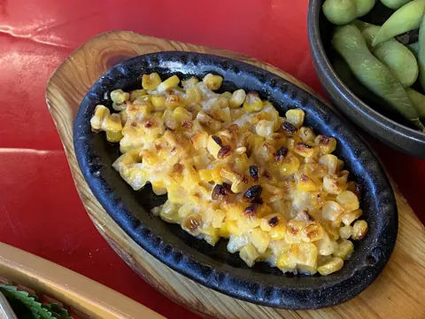
Photo : Corn cheese 2, lazy fri13th, CC BY 2.0 Photo : Bulgogi burger 1, star5112, CC BY-SA 2.0
Photo : Bulgogi burger 1, star5112, CC BY-SA 2.0 Photo : Gimchi-mari-guksu 1, 대경라이프, CC BY-SA 4.0
Photo : Gimchi-mari-guksu 1, 대경라이프, CC BY-SA 4.0 Photo : Saenggang cha, Korean tea, Korea.net / Korean Culture and Information Service, CC BY-SA 2.0
Photo : Saenggang cha, Korean tea, Korea.net / Korean Culture and Information Service, CC BY-SA 2.0 Photo : Boricha (barley tea), 국립국어원, CC BY-SA 2.0
Photo : Boricha (barley tea), 국립국어원, CC BY-SA 2.0 Photo : Omijacha, Hyeon-Jeong Suk, CC BY 2.0
Photo : Omijacha, Hyeon-Jeong Suk, CC BY 2.0 Photo : Hoppang (inside), ginam2119, CC BY 4.0
Photo : Hoppang (inside), ginam2119, CC BY 4.0 Photo : Ojingeo-twigim, stu_spivack, CC BY-SA 2.0
Photo : Ojingeo-twigim, stu_spivack, CC BY-SA 2.0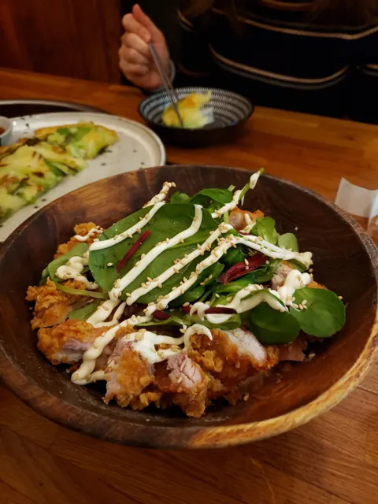
Photo : Chicken mayo deop-bap - Kogi, Brighton, Andy Li, CC0 Photo : Hoeori-gamja 1, anokarina, CC BY-SA 2.0
Photo : Hoeori-gamja 1, anokarina, CC BY-SA 2.0 Photo : Ssam vegetables and ssamjang, wizdata, CC0
Photo : Ssam vegetables and ssamjang, wizdata, CC0 Photo : Padak, Choi2451, CC BY-SA 3.0
Photo : Padak, Choi2451, CC BY-SA 3.0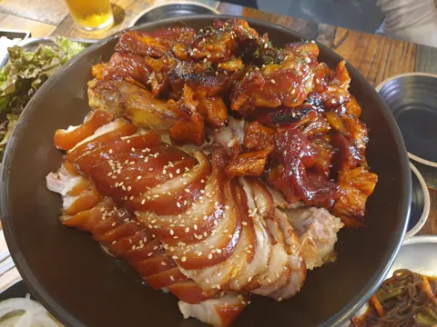
Photo : Jokbal korea, LR0725, CC BY-SA 4.0 Photo : Agujjim, Nuyos ( talk ) ( Uploads ), public domain
Photo : Agujjim, Nuyos ( talk ) ( Uploads ), public domain Photo : Boong o bbang, Penny Richards, CC BY-SA 4.0
Photo : Boong o bbang, Penny Richards, CC BY-SA 4.0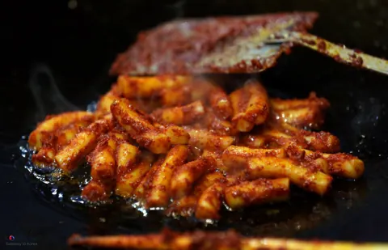
Photo : Korea Tongin Market 08 (12920988314), Republic of Korea from Seoul, Republic of Korea, CC BY-SA 2.0 Photo : Gomtang, chomjong, CC BY 2.0
Photo : Gomtang, chomjong, CC BY 2.0 Photo : Tangsuyuk (Korean Chinese sweet and sour pork), 용스토리, CC BY 4.0
Photo : Tangsuyuk (Korean Chinese sweet and sour pork), 용스토리, CC BY 4.0 Photo : Korean cuisine-Kkanpunggi-01, egg (Hong, Yun Seon), CC BY 2.0
Photo : Korean cuisine-Kkanpunggi-01, egg (Hong, Yun Seon), CC BY 2.0 Photo : Dongtae-jjigae 3, 행복한 초록개구리, CC BY 4.0
Photo : Dongtae-jjigae 3, 행복한 초록개구리, CC BY 4.0 Photo : Korean cuisine-Dubu buchim-01, 정희 강, CC BY 2.0
Photo : Korean cuisine-Dubu buchim-01, 정희 강, CC BY 2.0 Photo : Gondrebap (gondre rice) (Cirsium setidens) Korean thistle, 방신애, CC BY 4.0
Photo : Gondrebap (gondre rice) (Cirsium setidens) Korean thistle, 방신애, CC BY 4.0 Photo : 4미-동인동찜갈비, 대구광역시, CC BY 4.0
Photo : 4미-동인동찜갈비, 대구광역시, CC BY 4.0 Photo : Korean.food-Galbi-03, ayustety (a flickr user), CC BY-SA 2.0
Photo : Korean.food-Galbi-03, ayustety (a flickr user), CC BY-SA 2.0 Photo : 오메기떡 정면, 3hrAgency, CC BY-SA 4.0
Photo : 오메기떡 정면, 3hrAgency, CC BY-SA 4.0 Photo : Korean beverage-Baesuk-01, Alan Chan, CC BY-SA 2.0
Photo : Korean beverage-Baesuk-01, Alan Chan, CC BY-SA 2.0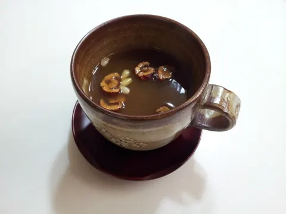
Photo : Daechu-cha 1, 가을들녁, CC BY 2.0 Photo : Egg Drop Sandwich and Fries, Marife.altabano, CC BY-SA 4.0
Photo : Egg Drop Sandwich and Fries, Marife.altabano, CC BY-SA 4.0 Photo : Kkwabaegi, 쪼끄미**, CC BY 4.0
Photo : Kkwabaegi, 쪼끄미**, CC BY 4.0


.jpg){kind=link}


.jpg){kind=link}
.jpg){kind=link}


.jpg){kind=link}

.jpg){kind=link}


.jpg){kind=link}


.jpg){kind=link}


.jpg){kind=link}


.jpg){kind=link}


.jpg){kind=link}


_2.jpg){kind=link}


.jpg){kind=link}


.jpg){kind=link}

.jpg){kind=link}


.jpg){kind=link}

.jpg){kind=link}


_(Cirsium_setidens)_Korean_thistle.jpg){kind=link}